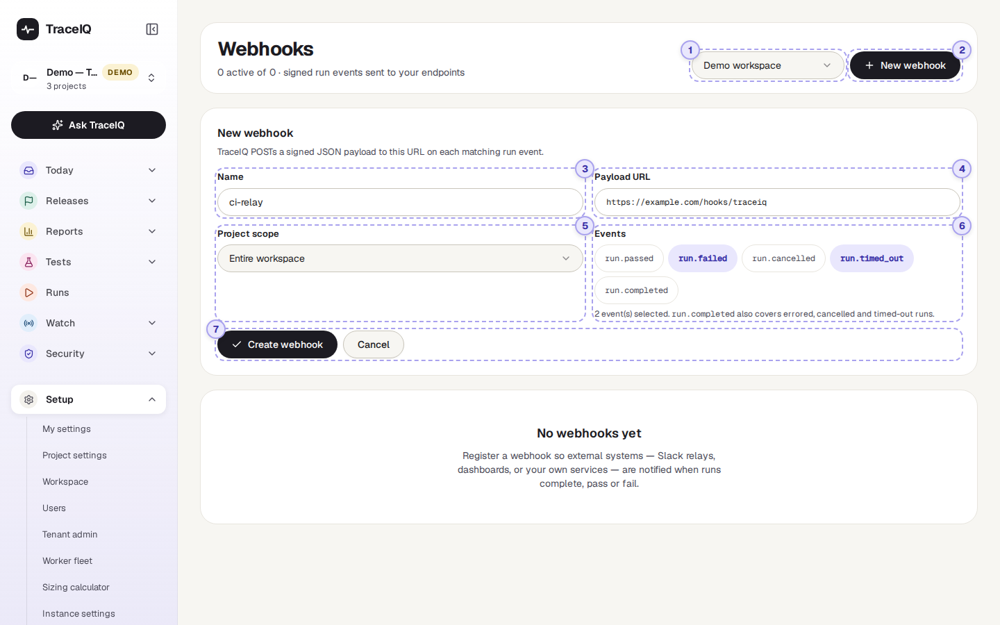
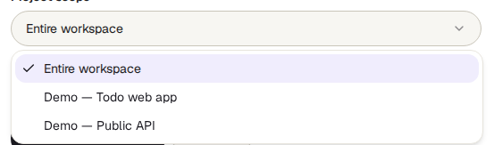
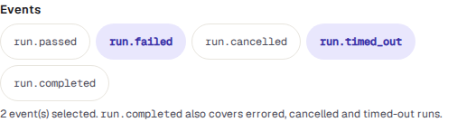

Webhooks
A webhook is a message TraceIQ sends to another system the moment a test run finishes: "run 471 failed", with the details. You give TraceIQ a web address, choose which results to send, and the other system (a chat relay, a dashboard, your own service) can react straight away.
What it is for
Webhooks answer "How do I let another tool know about a run without anyone having to check TraceIQ?" Instead of the other tool asking TraceIQ again and again whether something has finished, TraceIQ tells it once, as soon as it happens.
Developers
Let a build pipeline or a deployment tool continue, or stop, depending on whether the tests passed.
Team leads
Feed results into your own dashboard or chat channel through a small relay service.
Workspace admins
See whether each message arrived, and send one again when the receiving system was down.
Where to find it: in the sidebar, open Setup → Webhooks.
- A run is one go at running tests: a whole suite (a folder of tests) or a single test.
- A delivery is one message sent to one webhook. If it doesn't arrive, TraceIQ tries again, so one delivery can have several attempts.
A tour of the screen
The demo workspace has no webhooks yet, so the page shows "No webhooks yet". The screenshot below shows the form you get after pressing New webhook, filled in with example values. The numbers match the sections below. What the page looks like once webhooks exist is described after them, under The list of webhooks.

The line under the heading counts the webhooks, for example "2 active of 3": three webhooks exist and two of them are switched on.
Workspace
Webhooks belong to a workspace, not to one person. If you belong to more than one workspace, this menu chooses whose webhooks you see. The page opens on the first workspace in your list each time; it doesn't remember your last choice. If you belong to only one workspace, the menu isn't shown.
New webhook
Opens the form below the heading. Press it again, or press Cancel, to close the form without saving.
Name
A name for people, shown in the list, for example ci-relay or Release dashboard. It isn't sent anywhere. It is required.
Payload URL
The web address that should receive the messages. The team that runs the receiving
system gives you this. It must start with http:// or https://.
For safety, TraceIQ checks the address when you save it and again before every
message. Addresses on your own private network (such as 192.168… or
10…) are refused unless your administrator has allowed them for this
server; addresses that lead to a cloud provider's internal services are always
refused. If the address is refused, the form shows
"Webhook URL rejected" with the reason.
Project scope

Entire workspace (the default) sends a message for runs in every project of the workspace, including projects added later. Choose one project to hear only about that project's runs.
Events

An event is the kind of result that triggers a message. Click a button to select it (it turns lavender); click again to clear it. Select none to receive every finished run.
| Event | Sent when |
|---|---|
run.passed | The run finished and Passed. |
run.failed | The run finished and Failed. |
run.cancelled | Someone stopped the run before it finished (Cancelled). |
run.timed_out | The run went past TraceIQ's time limit (Timed out). |
run.completed | Any other ending, mainly Error (something went wrong around the tests). If you select it, you also get cancelled and timed-out runs. It does not include passed or failed runs. |
Select run.failed and run.completed. Together they
cover failed, error, cancelled and timed-out runs, and leave out the passes.
Create or cancel
Create webhook saves it, switched on. Cancel closes the form and nothing is saved.
Straight after you create a webhook, a box labelled Shown once appears with its signing secret: a long random code. The receiving system uses it to check that a message really came from your TraceIQ and wasn't changed on the way. Press Copy secret and pass it to whoever looks after the receiving system, then press Done.
TraceIQ stores the secret encrypted and never shows it again. If it is lost, delete the webhook and create a new one; the new one gets a new secret. Treat it like a password: don't paste it into a chat or a ticket.
The list of webhooks
Once a workspace has webhooks, they are listed on the left, in up to three boxes:
| Box | What is in it |
|---|---|
| Failing | Switched on, but the most recent attempt did not get through. Its icon is peach. |
| Active | Switched on, and the last attempt got through (or nothing has been sent yet). Its icon is mint. |
| Disabled | Switched off. Nothing is sent to it. |
Each row shows the webhook's name, its address and, once something has been sent, the answer code of the last attempt on the right: 200 (or another code in the 200s) means it arrived, a peach code means the receiver refused it, and 0 means no answer came back at all. Click a row to show it on the right. Until you do, the first one in the first box is shown.
The selected webhook
- Status labels: Active or Disabled, and, if the last attempts failed, how many in a row, for example 3 consecutive failure(s). Every attempt counts, retries included; one that gets through sets it back to zero.
- Scope: Entire workspace or the project's name. Last delivery: the answer code and time of the last attempt, or Never delivered. Created: when it was made.
- Events: the events it was set up for, or All events.
- Verifying deliveries: a reminder for the receiving team of how to check the signature.
- Recent deliveries: the delivery log (below).
- Disable delivery / Enable delivery switches it off or on without losing it. Delete webhook asks you to confirm, then removes it and its log for good.
Recent deliveries
One row per attempt, newest first, up to the 50 most recent. All and Failed at the top filter the list. Each row shows:
| Part of the row | What it means |
|---|---|
| OK 200 / Failed | Whether this attempt arrived, with the receiver's answer code. A lavender pending is being sent right now. |
| Event and run | Which event it was, and a link to the run it was about. |
| attempt 2 · time · 140 ms | Which try this was (or manual redelivery), when, and how long the receiver took to answer. |
| Reason (peach) | Why it failed, in a few words, for example HTTP 503, ConnectTimeout or redirect not followed (302). The receiver's reply itself is never stored or shown. |
| Next automatic retry | When TraceIQ will try again by itself. |
| 8 letters and Redeliver | The start of the delivery's ID (the same on every attempt), and a button to send it again now. |
Watch it in use
How to…
…send failed runs to another system
- Ask the team that runs the receiving system for the web address to use.
- Press New webhook, type a name and paste the address into Payload URL.
- Under Project scope, keep Entire workspace or choose one project.
- Under Events, select
run.failed(andrun.completedto include errors, cancellations and time-outs). - Press Create webhook, then Copy secret, and hand the secret to the receiving team in a safe way.
…find out why messages aren't arriving
- Look in the Failing box and click the webhook.
- Under Recent deliveries, choose Failed and read the reason on each row.
- Pass the reason to the receiving team. HTTP 4xx/5xx means their system answered but refused; a word like ConnectTimeout means it didn't answer at all.
- Once they have fixed it, press Redeliver on the messages they missed.
…pause messages for a while
- Click the webhook and press Disable delivery. It moves to the Disabled box.
- Runs that finish while it is disabled are not sent, not even later. Press Enable delivery when you are ready again.
Good to know
- Only workspace admins can see this page. A webhook receives every run of the workspace, and its address often contains a password of its own, so other members see "Workspace admins only". Creating, switching, deleting and redelivering are recorded in the Audit log.
- Failed messages are retried by themselves after 1, 5 and 30 minutes, so up to four attempts in all. There is no retry when the receiver answers 410 Gone, when the address is refused for safety, or for a message you redelivered by hand (press it again instead).
- Redirects are not followed. If the receiver answers "this has moved" (a 3xx code), the attempt counts as failed. Use the final address.
- The receiver has 10 seconds to answer each attempt.
- A redelivered message is the same message. It has the same delivery ID as before, so a receiver that already handled it can skip it. Redeliver also works on a disabled webhook, which is handy for testing a receiver before switching it back on.
- The log keeps 30 days. Older attempts are removed automatically. The log refreshes every 15 seconds while it is open.
- What a message contains: the run's number, result, suite and test names, browser and device, how many tests passed and failed, how long it took, its error message, links to its trace and video, the code version it tested (if it was given one), who or what started it, and the name, result and error of up to 100 tests.
- The demo workspace never sends anything. TraceIQ skips webhooks for demo data, and for the check runs it makes to try out a suggested fix (see Proposals).
- The settings can't be edited. To change a webhook's address, scope or events, create a new one and delete the old one.
- Not the same as chat notifications. Messages to Slack or Microsoft Teams are set up for each project in Project settings. Webhooks are for systems your team builds or runs.
Related pages
Issue trackers
The next page in this guide: connect Jira, GitHub or iTop to file a ticket from a failed run.
API keys
The other direction: let another system start runs and read results in TraceIQ.
Project settings
Email, Slack and Teams notifications for one project.
Audit log
Who created, changed, deleted or redelivered a webhook, and when.